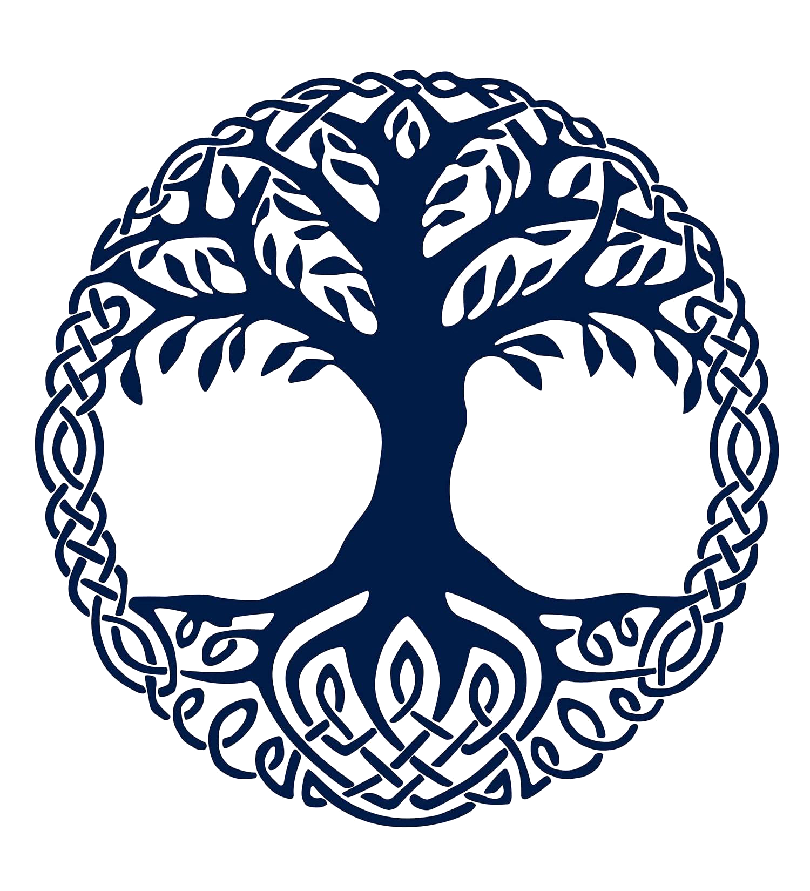

Religion
Matters of the gods and their exploits
Central Valley
The land of Khordad was shaped by the four Royal Stars, beings belonging to the astral plane who brought along a celestial with the name of Ahura Mazda, also known as Lord Wisdom. All beings born in Khordad were created by Lord Wisdom, and his only son becomes the first ruler: Gayumart, the Emperor of Beginning.
Royal Stars
It is known that the divine rulers of the pantheon worshipped in the imperial city and its sister settlements are the Royal Stars; four celestial bodies that watch over all the citizens of Khordad.
While it is known that the worship of the Royal Stars allows for adoration of other deities, it is implied that these last ones are of less importance and validity; as such, most other beliefs around Khordad make it a point to mention in a not so overt way that their patrons are powerful even beyond the Royal Stars. Their names are as follows.
Amesha Spentas
Next in the hierarchy are the holy immortals, better known as the Amesha Spentas. Here are their names.
Afanasiy Range
The Adilet Tree
In Tascheter's domain, the East of Khordad, the Royal Stars created the oak of justice, more widely known as the Adilet Tree in the tongue of the region. An eagle perched among its branches, while a snake hid between its roots, and the tree continued to grow without signs of stopping. Soon its crown reached higher than the mountaintops, and deep enough to touch the world's core. The land surrounding it was nourished by its presence, so much so that an entire forest sprouted; vegetation and crops in the Adilet forest grow incredibly fast and are to be enjoyed by the nearby dwellers, as long as they don't over exploit the resources or wander into the forest.
Forceful Occupation
The dwarves occupying the range worship this tree and the creatures upon it equally, but part of this belief seemed to extend to the lands beyond the eastern seas. Elves crossed the water and forcefully relocated the dwarves to a single mountain in the westernmost border of the range; they wished to perch on the range and be as close as possible to whom they perceived to be the good eagle on the treetop, in contrast to the evil serpent of the depths. For their part, the dwarves retreated to the salt mine of Salzwedel and, unbeknownst to the elves, extended their mines all throughout the innards of the range and beyond. All other entrances and exits at its skirts were collapsed while the elves founded the High City of Genrikh; it sat in the perfect middle of the range, unable to be higher as the mountaintops bring the risk of dragons.
Material Division
Unlike the Royal Stars and Lord Wisdom, the Aarakocra Perun and the Yuan Ti Veles are firmly rooted in the material plane. As such, both dwarves and elves differentiate the layers of the land as follows.
- Prawia - All that is above: the mountaintops, beyond the clouds, and the crown of the Adilet Oak.
- Jawia - The land, the skirts of the range, and the trunk of the tree.
- Nawia - The depths: the mines, under the earth, the roots of the tree.
That is not to say their cultures are not still influenced by the beliefs of the valley. Notoriously, while the Genrikh Council members are known as branches, there are seven of them, with the first being the one with the most political power; much like the Amesha Spentas.
Northwestern Moors
Land of Heroes
While no gods claimed this land, their deities are instead ascended heroes of legend, and thus they are numerous. Each individual, family, organization or settlement picks their patron saint and follows their guidance.
The most notorious religious group in the Moors is the paramilitary force of the Ravenshields, whom follow the prescepts of the ascended hero Rhiannon, the mare queen.

The Mare Queen
As a mortal she was an outlander general, arrived from the war torn lands to the West with her majestic white warhorse in order to find peace. She settled down upon the rolling hills and soon married a local prince named Pwyll, a man of good heart but hasty disposition; she, in contrast, is cool headed and pensive. Not long after they are married they produce an heir, Pryderi, who is immediately abducted by the fae for their own amusement. The distracted maids who were supposed to look over him pin the blame on Rhiannon, who is sentenced to be morphed into a mare and serve as a beast of burden.
During the nights and guided by songbirds in the night, Rhiannon takes it upon herself to find her son, eventually learning of a fae touched boy with an affinity for horses in the furthest town in the Moors. In her form of a mare she approaches him, immediately recognizing the resemblance with his father, and reveals his true origins. They both return home, where Rhiannon is pardoned and Pryderi is welcomed with open arms. He too becomes an ascended hero of legend.
Her ruling continues even after Pwyll's passing and Pryderi's involvement in the efforts to keep the orc invasions from the West and the Swamplands controlled. She imparts wisdom and justice in equal measure, aiding the warriors with tactical advice and discipline, thanks to her own past experience. She is married once more to a warrior named Manawydan, and upon her passing is ascended into the hero she is known as today.
Her symbols can be identified in the most well known depiction of her story: the night she finds her son. Most of the background is filled with the moon, while a white mare gallops in the forefront, and upon her back sit three songbirds. Each symbol is an aspect of Rhiannon: the moon is the calm in the face of trouble, the mare is the disposition to take matters into ones own hands, and each bird speaks of willingness to help, honesty and justice. The Ravenshields opted for the raven as their symbol, the largest songbird and a symbol of justice.
Southern Seas
Divine Triad
The inhabitants of Lestari Island and the sister coastal city of Batari share their worship as it is all related to the waters that bring their livelihood. They worship three major deities.
- Dewi Shri - The goddess of fertility, for a bountiful harvest, a prolific sealife, and for all those who wish for children.
- Nyi Roro Kidul - The goddess of the sea, for good tides, safe travels and enough sustenance from her waters.
- Semar - The playful spirit, for a fair balance between careful introspection and simple lightheartedness.
The Lighthouse
Oddly enough, the people of Dian in particular, and those of Batari to a lesser extent, seem to hold a similar belief of the distribution of the strata of the world akin to that of the elves and dwarves of the Afanasiy Range. The Lighthouse in Lestari is an ancient remnant of this, as it is estimated to have been built around the time the gods touched upon Khordad, as a sort of offering.
- Swah Loka - The uppermost layer above the clouds, the light of the lighthouse, and the divine
- Bwah Loka - The land and the sea, the lighthouse cabin, the mundane and material
- Bhur Loka - The dark underworld, the sacred dead but also the unknown
It is to be noted that in this last layer there is occasional mention of a guardian for the dead and lost, for safety in the dark, in the shape of a cosmic serpent named Antaboga.
Userkaf Desert
Descendants of the Gods
Non-Regional-Specific Worship
tabaxi
orcs